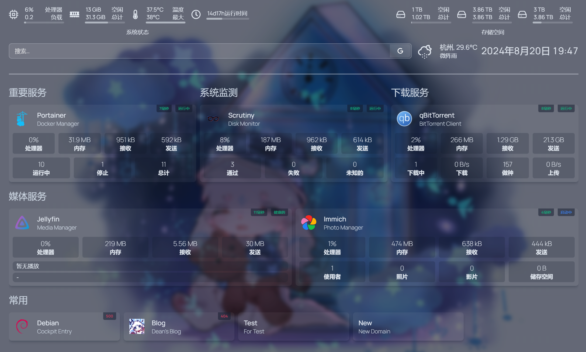
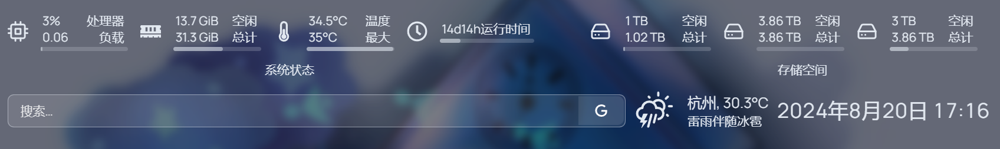
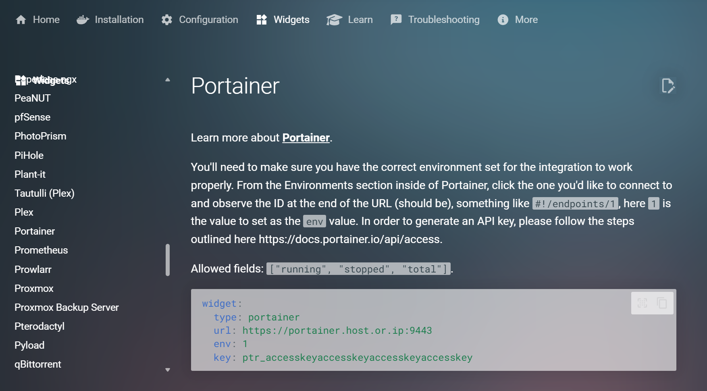

回到目录
介绍
Homepage 是一个开源的、现代的、安全的、高度可自定制的应用程序仪表板（Homepage），或者，大家更习惯称这类应用为「导航页」。
如果我们在内网部署了 NAS，一般来说我们需要记住 IP 地址和各种服务的端口才能访问到各种应用，比较麻烦。但是如果将这些地址写入 Homepage 的配置当中，我们就可以直接通过 Homepage 导航页一键直达我们想要访问的服务。
Homepage 导航页的布局和背景等还能手动配置，自定义打造一个自己喜欢的主页。

通过 Docker 部署
使用 Docker Compose：
1
2
3
4
5
6
7
8
9
10
11
12
13
14
15
16
| version: "3.3"
services:
homepage:
image: ghcr.io/gethomepage/homepage:latest
container_name: homepage
ports:
- 3000:3000
volumes:
- ./homepage/config:/app/config
- ./homepage/logs:/logs
- ./homepage/icons:/app/public/icons
- ./homepage/images:/app/public/images
- /path/to/disk:/path/to/mount:ro
- /var/run/docker.sock:/var/run/docker.sock
|
.yaml文件请一定要注意缩进！
不要将/app/public目录整个挂载出来。
配置
第一次访问 3000 端口 Homepage 时，会自动在映射的文件夹内生成各类配置文件和日志文件夹，结构如下：
1
2
3
4
5
6
7
8
9
10
| homepage
├── config
│ ├── bookmarks.yaml
│ ├── docker.yaml
│ ├── kubernetes.yaml
│ ├── services.yaml
│ ├── settings.yaml
│ └── widgets.yaml
└── logs
└── homepage.log
|
配置简单易懂。如果需要变更某部分内容，只要修改对应的配置文件即可：
- bookmarks.yaml：书签（更建议直接在 services.yaml 中设置，更为美观）
- docker.yaml：Docker 容器
- kubernetes.yaml：k8s 容器
- logs：日志目录
- services.yaml：各项服务
- settings.yaml：Homepage 设置
- widgets.yaml：小部件
建议将需要使用到的静态图片（背景、Favicon 等）存储在 NAS 本地，加载速度更快。
settings.yaml
在配置前，请先阅读官方文档。
这一设置与 services.yaml 中的配置相关。假设你在 services.yaml 中创建了三组服务，名为 Media 、NAS 和 书签，那么只要在 settings.yaml 中加上 raw 的样式和每行 column 的个数，就可以横向排列，节省空间。
1
2
3
4
5
6
7
8
9
10
11
12
13
14
15
16
17
18
19
20
21
22
23
24
25
26
27
28
29
30
31
32
33
34
35
36
37
38
39
| ---
providers:
openweathermap: openweathermapapikey
weatherapi: weatherapiapikey
title: Page Title
favicon: /path/to/favicon
background:
image: /path/to/background
blur: sm
saturate: 50
brightness: 50
opacity: 50
cardBlur: md
layout:
Group 1:
style: column
columns: 3
Group 2:
headerStyle: underlined
language: zh-CN
hideVersion: true
showStats: true
logpath: /
|
在Homepage 中，widgets.yaml 文件主要是用来修改页面顶部的一些小部件，比如系统状况、搜索框、天气、时间、欢迎词等等。

1
2
3
4
5
6
7
8
9
10
11
12
13
14
15
16
17
18
19
20
21
22
23
24
25
26
27
28
29
30
31
32
33
34
35
36
37
38
39
40
41
| ---
- resources:
label: 系统状态
expanded: true
cpu: true
memory: true
cputemp: true
uptime: true
units: metric
refresh: 3000
- resources:
label: 存储空间
expanded: true
disk:
- /
- /path/to/mount
- search:
provider: [bing, google]
target: _blank
- openmeteo:
label: 杭州
latitude: 30.300262
longitude: 120.089630
timezone: Asia/Shanghai
units: metric
cache: 5
- datetime:
text_size: xl
locale: zh-CN
format:
dateStyle: long
timeStyle: short
hourCycle: h23
|
services.yaml
请访问 Homepage 组件配置文档，找到你需要显示的组件（若无则说明暂时不支持），严格地按照说明填写services.yaml文件中各个服务的 widget 部分，否则会无法获取服务状态。
另对于如 qBittorrent 等服务，其账户密码要求以明文形式填写进配置文件中，须注意安全。

1
2
3
4
5
6
7
8
9
10
11
12
13
14
15
16
17
18
19
20
21
22
23
24
25
26
27
28
29
30
| ---
- Group 1:
- Item 1:
icon: /icons/xxx.png
href: http://192.168.xxx.xxx:xxxx
description: Description
siteMonitor: http://192.168.xxx.xxx:xxxx
server: my-docker
container:
widget:
type: xxx
url: http://192.168.xxx.xxx:xxxx
env: 2
key: xxx
- Group 2:
- Bookmark:
- Site:
icon: /icons/xxx.jpg
href: https://xxx/
description: Description
siteMonitor: https://xxx/
|
docker.yaml
添加以下两行内容即可：
1
2
| my-docker:
socket: /var/run/docker.sock
|
下一章节：PT